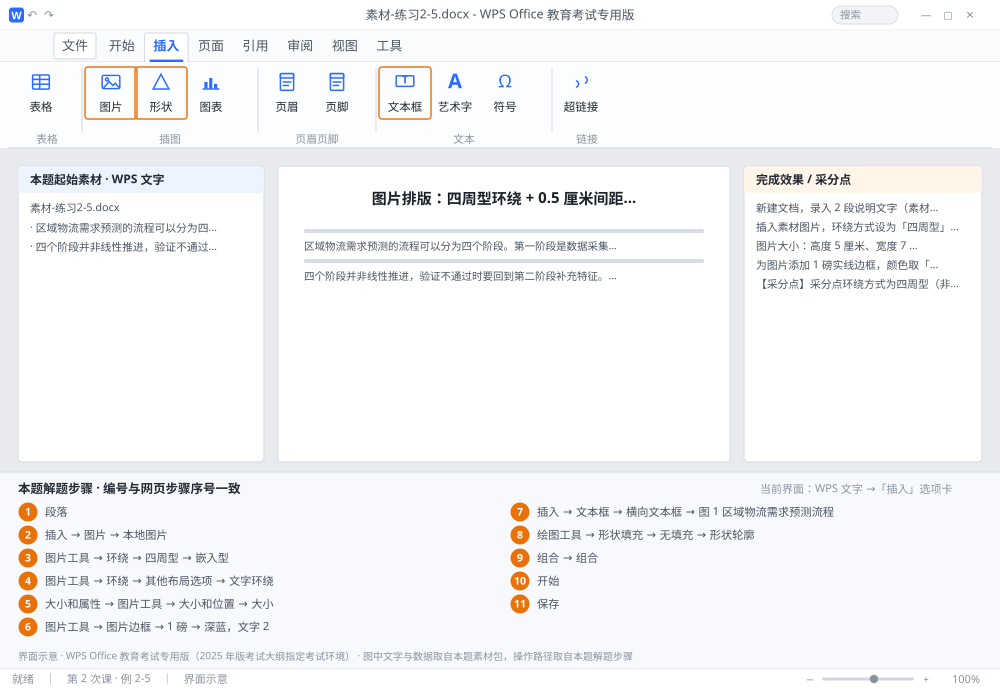

完成比对文档 · 例 2-5
图片排版：四周型环绕 + 0.5 厘米间距 + 高 5 宽 7 厘米 + 与图注组合 ｜ 第 2 次课 / WPS 文字 ｜ 网页：实操-文字2.html ｜ 考试环境：WPS Office 教育考试专用版（2025 年版考试大纲指定考试环境）
用途 本页按修订后的题目要求与解题步骤生成，是交卷自查的结果基准：
逐项列出每一步应出现的可复核结果，配合模拟操作截图与解题结果文件使用。
它不是素材包的一部分，不会预置答案动作；起始素材仍从本题素材包下载。
一、本题起始素材包
目录：练习素材/练习2-5-图片环绕与组合/ ｜
下载包：练习素材/下载/练习2-5-图片环绕与组合.zip
素材-练习2-5.docx图1-实训场景.png素材说明.txt
二、题目要求
- 新建文档，录入 2 段说明文字（素材）。
- 插入素材图片，环绕方式设为「四周型」，与正文上下左右间距均为 0.5 厘米。
- 图片大小：高度 5 厘米、宽度 7 厘米（不锁定纵横比）。
- 为图片添加 1 磅实线边框，颜色取「深蓝，文字 2」。
- 插入文本框写图注「图 1 区域物流需求预测流程」，设为无填充、无轮廓，置于图片下方。
- 将图片与图注文本框组合为一组，整体在页面中水平居中。
- 保存为 学号-姓名-练习2-5.docx。
三、解题步骤（编号与下方核对表、截图编号一致）
- 新建录入。Ctrl+N，录入素材两段（段首缩进可用「段落」→ 首行缩进 2 字符统一处理）。
- 插入图片。「插入」→「图片」→「本地图片」→ 选中素材图 → 插入。
- 改环绕方式。选中图片 →「图片工具」→「环绕」→「四周型」。默认是「嵌入型」，嵌入型图片只能在文字行间移动，无法设环绕间距。
- 设环绕间距。「图片工具」→「环绕」→「其他布局选项」→「文字环绕」选项卡 → 选「四周型」→ 在「距正文」里把上、下、左、右都填 0.5 厘米 → 确定。
- 设精确尺寸。右键图片 →「大小和属性」（或「图片工具」→「大小和位置」）→「大小」选项卡 → 取消勾选「锁定纵横比」→ 高度填 5 厘米、宽度填 7 厘米 → 关闭。不取消锁定，改高度时宽度会自动跟着变，永远凑不出 7 厘米。
- 加边框。「图片工具」→「图片边框」→ 粗细「1 磅」→ 颜色选主题色里的「深蓝，文字 2」。
- 做图注。「插入」→「文本框」→「横向文本框」→ 拖到图片下方 → 输入「图 1 区域物流需求预测流程」→ 宋体小五、居中。
- 清掉文本框底色。选中文本框 →「绘图工具」→「形状填充」→「无填充」；「形状轮廓」→「无轮廓」。
- 组合。按住 Shift 先点图片、再点文本框（两个都要选中）→ 右键 →「组合」→「组合」。
- 整体居中。选中组合后的对象 →「开始」→ 居中（组合对象随所在段落的对齐方式移动）。
- 保存。F12 另存为 学号-姓名-练习2-5.docx。
四、完成效果 / 采分点
采分点环绕方式为四周型（非嵌入型） · 距正文上下左右各 0.5 厘米 · 高 5 厘米、宽 7 厘米且未锁纵横比 · 边框 1 磅、颜色为深蓝 · 图注文本框无填充无轮廓 · 图片与文本框已组合 · 组合整体水平居中
五、逐项完成核对表
| 步骤 | 关键操作路径 | 应出现的结果（可复核） |
|---|
| 1 | 新建录入 | 「段落」、2 字符 |
| 2 | 插入图片 | 「插入」、「图片」、「本地图片」 |
| 3 | 改环绕方式 | 「图片工具」、「环绕」、「四周型」、「嵌入型」 |
| 4 | 设环绕间距 | 「图片工具」、「环绕」、「其他布局选项」、「文字环绕」、「四周型」 |
| 5 | 设精确尺寸 | 「大小和属性」、「图片工具」、「大小和位置」、「大小」、「锁定纵横比」 |
| 6 | 加边框 | 「图片工具」、「图片边框」、「1 磅」、「深蓝，文字 2」 |
| 7 | 做图注 | 「插入」、「文本框」、「横向文本框」、「图 1 区域物流需求预测流程」 |
| 8 | 清掉文本框底色 | 「绘图工具」、「形状填充」、「无填充」、「形状轮廓」、「无轮廓」 |
| 9 | 组合 | 「组合」 |
| 10 | 整体居中 | 「开始」 |
| 11 | 保存 | F12、学号-姓名-练习2-5.docx |
六、模拟操作截图

界面示意 · WPS Office 教育考试专用版 · 橙色编号与本题解题步骤序号一致；
图中文字与数据取自本题素材包，功能入口取自本题解题步骤。
核对方法：按网页解题步骤完成并另存自己的成稿后，逐行比对本表第 3 列的
参数、公式、区域、文件名与对象数量；再对照网页「完成效果 / 采分点」检查版式是否一致。